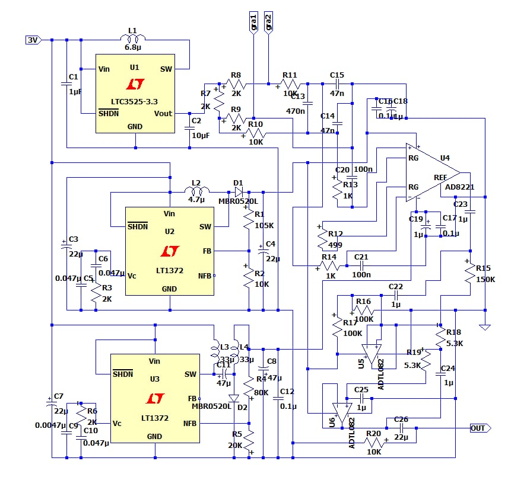
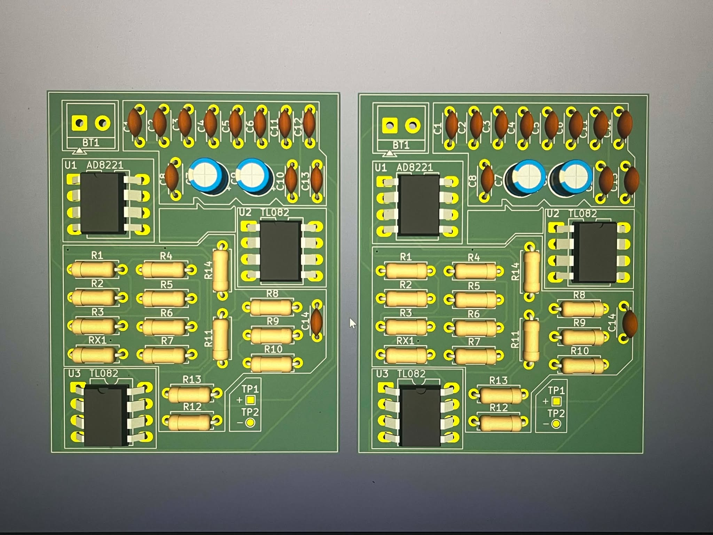

Analog Readout Circuit for a Graphene Sensor
This circuit is being developed to read resistance changes from a graphene piezoresistive sensor during vibration testing. The design connects the sensor measurement to an analog signal that can be observed and analyzed.
Signal Path & System Overview
Graphene sensor → Wheatstone bridge → RC stage → AD8221 instrumentation amplifier → 1–15 Hz band-pass filter
The diagram shows the four signal-processing stages and their power modules. The bridge output passes through the RC filter and AD8221 before reaching the band-pass stage.

Circuit Stages
1. Wheatstone Bridge
Three fixed 2 kΩ resistors form a bridge with the sensor resistance Rx. It is a simulation input, not a measured sensor response.

2. Input RC Filter
The passive input network uses two 10 kΩ series resistors, a 470 nF capacitor between the signal lines, and a 47 nF capacitor from each line to ground. It filters the bridge signal before amplification.

3. AD8221 Instrumentation Amplifier
The AD8221 amplifies the differential signal. The gain resistor is 499 Ω. Using the AD8221 datasheet equation, the nominal amplifier gain is approximately 100 V/V.
G = 1 + 49,400 / 499 ≈ 100
This is the calculated gain of the AD8221 stage, not the measured gain of the complete signal chain. The schematic also includes 1 kΩ input resistors, 100 nF input capacitors, and 0.1 μF / 1 μF supply decoupling capacitors.

4. Active Band-Pass Filter
The circuit combines active high-pass and low-pass sections, followed by a 22 μF output coupling capacitor and a 10 kΩ resistor. The schematic shows 1 μF filter capacitors, 150 kΩ / 100 kΩ resistors in the first section, and 5.3 kΩ resistors in the second. The 1–15 Hz range is the design target; the complete response remains to be verified.

Complete Circuit Schematic
The circuit and PCB are designed in EasyEDA. LTspice is used to study circuit behavior before hardware implementation.

PCB Design
